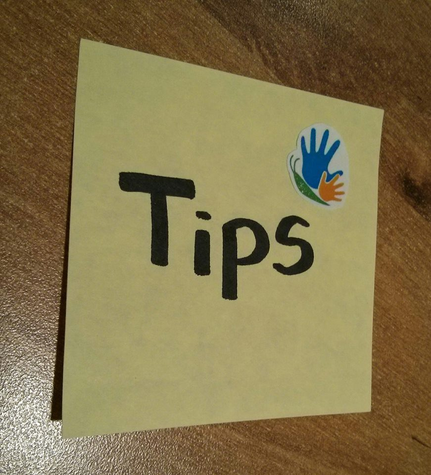

בהמשך לפוסט בנושא שגיאות כתיב - טיפים!

טיפים שיכולים לעזור בעבודה על צמצום שגיאות כתיב:
1) קריאה קריאה קריאה!!
ככל שהילד יקרא יותר ויתרגל את מיומנות הכתיבה, הוא ייחשף לתבניות מילים רבות יותר, וברגע האמת ידע לשלוף את התבנית הנכונה.
2) פיתוח בקרה עצמית
לפני שאומרים לילד באיזו מילה השגיאה, כדאי להעביר אליו את הכדור ולשאול: איפה נראה לך ששגית?
או אם הילד שואל אותנו איך כותבים מילה מסויימת, לדוגמה: 'ארוחה', מומלץ לתת לו לנסות להגיע לתשובה ולתקן בעצמו. אחת השיטות היא לבקש שיכתוב את המילה בכמה וריאציות: ערוכה, ערוחה, ארוכה, ארוחה. ההנחה היא, שברגע שהוא יכתוב את התבנית הנכונה הוא יזהה אותה מיד.
באופן זה, הילד מפתח בקרה עצמית, תשומת הלב לשגיאות הכתיב תעלה ותהיה לו גם דרך להתמודד איתן ולתקן.
3) עודדו את הילדים לכתוב practice makes perfect!
רשימת קניות, ברכה ליום הולדת של סבא/סבתא, פתק סודי לאמא.. לא משנה מה, ככל העולה על רוחכם! לתרגל את הפרוצדורה היום-יומית הזו, גם מחוץ לקונוטציה הבית ספרית..
בהצלחה ביישום ההמלצות!
סיון גומבוש - להצליח עם חיוך